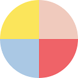

Job boards in Netherlands
20 job boards and aggregators based in or serving Netherlands: 7 headquartered there and 13 based elsewhere that serve it. 20 have facts checked against their own pages or official sources.
Most prominent by web link popularity: Recruitee, Randstad, Adzuna, YoungCapital.
| Board | Prominence | Type | HQ | Language | API | Partner program |
|---|---|---|---|---|---|---|
| Large #5,796 | Applicant tracking system | Netherlands | Not recorded | Self-serve API key | yes | |
| Established #22,715 | Staffing agency | Netherlands | English | API status unknown | unknown | |
| Established #66,808 | Job aggregator | United Kingdom | English | Self-serve API key | yes | |
| Established #86,366 | Niche job board | Not recorded | Dutch | API status unknown | unknown | |
| Small #106,409 | Niche job board | Not recorded | Not recorded | API status unknown | unknown | |
| Small #117,326 | Government job site | Not recorded | Dutch | API status unknown | unknown | |
| Small #131,567 | Niche job board | Not recorded | Not recorded | API status unknown | unknown | |
| Small #233,743 | Niche job board | Not recorded | Dutch | API status unknown | unknown | |
| Small #318,621 | Niche job board | Not recorded | Dutch | API status unknown | unknown | |
| Small #326,013 | Outplacement firm | Netherlands | English | API status unknown | unknown | |
| Small #413,520 | Government job site | Not recorded | Not recorded | API status unknown | unknown | |
| Small #503,858 | Staffing agency | Netherlands | Dutch | API status unknown | unknown | |
| Small #523,875 | Niche job board | Netherlands | Dutch | API status unknown | yes | |
| Small #734,886 | Niche job board | Not recorded | English | API status unknown | unknown | |
Randstad DigitalStaffing agency | Small #803,483 | Staffing agency | Netherlands | English | API status unknown | unknown |
| Small #811,404 | Niche job board | Not recorded | Not recorded | API status unknown | unknown | |
| Small #916,915 | Niche job board | Netherlands | Dutch | API status unknown | unknown | |
| Not comparable | Job aggregator | Not recorded | English | API status unknown | unknown | |
 | Not comparable | Niche job board | Not recorded | Not recorded | API status unknown | unknown |
| Not in top 1M | Feed aggregator | Not recorded | Not recorded | API status unknown | unknown |